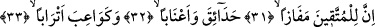
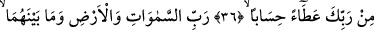
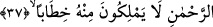

TAKVÂ SAHİPLERİ İÇİN
KURTULUŞ VARDIR
31. Şüphesiz takvâ sahipleri için umulanı buldukları yer vardır.
32. (Orada) bahçeler, üzüm bağları,
33. Göğüsleri tomurcuk gibi kabarmış yaşıt kızlar,
34. İçki dolu kâseler vardır.
35. Onlar orada ne boş bir lâkırdı ne de yalan işitirler.
36. Bunlar Rabbinin yeterli bir bağışı, mükâfatıdır.
37. O, göklerin, yerin ve ikisi arasında bulunanların Rabbidir. O, rahmândır. O
gün insanlar O’na karşı konuşmaya yetkili değillerdir.
“Şüphesiz takvâ sahipleri için umduklarını bulma (kurtuluşa erme) vardır.” Bu
cümle, Kur’an’ın adeti olduğu üzere kâfirlerin kötü durumlarının beyan edilmesinin
ardından müminlerin güzel hallerinin açıklanması sadedinde bir başlangıç cümlesidir.
Kâfirlerin durumlarının açıklanmasına neden öncelik verildiği açıklamaya ihtiyaç
duyulmayacak kadar açıktır. Buna göre âyete mânâ vermek gerekirse; küfürden ve
kâfirlerin ameli olan diğer çirkinliklerden sakınanlar için kurtuluş ve istediklerini elde
etme vardır. Mânânın böyle olduğuna âyetin akışı içerisinde devam eden “bahçeler,
üzüm bağları...” ifâdeleri işâret etmektedir.
“Mefâzen” kelimesini “kurtuluşa erme” şeklinde tercüme ettik. Kelimeyi böyle
anlamak mümkün olduğu gibi, “ism-i mekan” olarak “kurtuluş yeri” şeklinde anlamak da
mümkündür. Birinci yaklaşıma göre kelime mimli masdar, ikinci anlama göre ism-i
mekândır.
Burada şöyle bir soru gelebilir: “Helâk olmaktan kurtuluş, lezzetleri elde etmekten
daha önemlidir. Âyette neden daha önemli dururken, daha az önemli zikredilmiştir?” Biz
bu soruya şöyle deriz: Helak olmaktan kurtuluş nimeti elde etmeyi gerektirmez. Çünkü
helak olmaktan kurtuluş a’rafta olanlar için de söz konusudur. Halbuki onlar nimeti elde
edemeyeceklerdir. “Nimeti elde etmek” böyle değildir. Nimeti elde etmek aynı zamanda
helak olmaktan kurtuluşu da gerektirir. Şu halde nimeti elde etmenin zikredilmesi daha
uygun düşer.